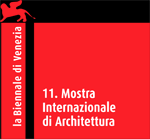
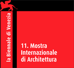

Everyville 2008 is an initiative made possible by the collaboration of the Biennale with Gruppo Telecom Italia, which has placed its most innovative technology at the service of the competition and display of the winning projects. Software powered by newitalianblood.com and MACE. In collaboration with domus and Foscarini. MACE is co-funded by the European Commission, eContentplus Program.
 

Domus
Foscarininewitalianblood
This project is funded through MACE under the eContentplus programme, a multi–annual Community programme to make digital content in Europe more accessible, usable and exploitable.